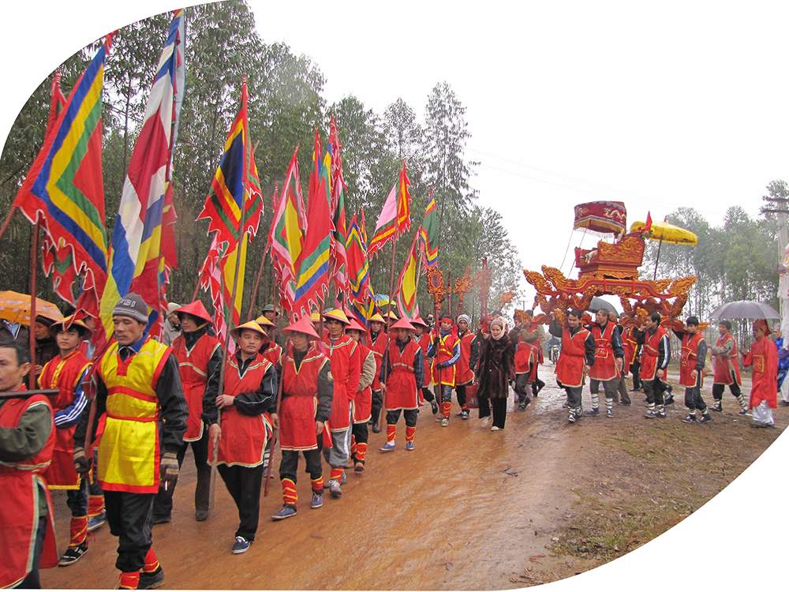

Phú Thọ - Mảnh đất cội nguồn của dân tộc Việt Nam hiện đang lưu giữ 3/12 di sản văn hóa phi vật thể của thế giới được UNESCO vinh danh đó là: Tín ngưỡng thờ cúng Hùng Vương, Hát Xoan Phú Thọ và Ca Trù. Đây là điều rất đáng tự hào của vùng đất và người dân Đất Tổ.
Tín ngưỡng thờ cúng Hùng Vương đã được UNESCO ghi danh Di sản văn hóa phi vật thể của nhân loại ngày 6/12/2012: Đất Tổ - Trung tâm Nhà nước Văn Lang thời đại các Vua Hùng dựng nước. Tín ngưỡng thờ cúng Hùng Vương không chỉ ở một vùng, một miền mà lan tỏa trong cả nước, tạo nên một không gian văn hóa rộng khắp như một sự sắp đặt của tạo hóa và hình thành nên lịch sử một dân tộc. Từ đó sự sáng tạo văn hóa ra đời và lan tỏa cộng đồng kết thành ý thức nguồn cội, nghĩa “Đồng bào” trở thành yếu tố nội lực không chỉ tạo nên sức mạnh của dân tộc ta trong tiến trình lịch sử của nhân loại. Với tinh thần ấy Tín ngưỡng thờ cúng Hùng Vương của Phú Thọ được UNESCO vinh danh là di sản văn hóa phi vật thể đại diện của nhân loại vào ngày 6/12/2012.
Từ khi Tín ngưỡng thờ cúng Hùng Vương được ghi danh, lãnh đạo tỉnh Phú Thọ đặc biệt quan tâm đến việc bảo tồn và phát huy giá trị của di sản văn hóa phi vật thể này và cam kết thực hiện chương trình hành động nhằm bảo vệ sức sống, sự lan tỏa của Tín ngưỡng thờ cúng Hùng Vương ở Phú Thọ. Đặc biệt tỉnh Phú Thọ cụ thể hóa những chính sách dưới Luật và Nghị định để phục vụ công tác phục hồi không gian thờ tự, những ghi lễ, diễn xướng liên quan đồng thời khuyến khích việc trao truyền, thực hành nghi lễ, tín ngưỡng cho các thế hệ nhằm giáo dục truyền thống “Uống nước nhớ nguồn, ăn quả nhớ người trồng cây” để di sản mãi mãi được trường tồn, xứng đáng là di sản phi vật thể của nhân loại.
Di sản văn hóa phi vật thể “Hát Xoan Phú Thọ” được UNESCO công nhận ngày 18/12/2017 tại Jeju - Hàn Quốc: Hát Xoan Phú Thọ là sản phẩm nghệ thuật do Vua Hùng truyền dạy riêng cho dân làng Kim Đức và Phượng Lâu. Do vậy được người xưa coi là nghệ thuật của trách nhiệm và nghệ thuật tâm linh của các con dân các làng Xoan. Trách nhiệm vì Hát Xoan là sản phẩm của Vua trao truyền cần phải gìn giữ, tâm linh là để Vua nghe, hát để Vua giáng phúc cho dân làng. Tuy Hát Xoan là loại hình nghệ thuật biểu diễn được người dân coi là quà của Vua Hùng cho bốn làng Xoan gốc: Làng Phù Đức, Thét, Kim Đái và An Thái nhưng trong diễn trình lịch sử của nó đã được tất cả các làng của tỉnh Phú Thọ tiếp nhận và coi nó là loại hình nghệ thuật không thể thiếu vắng trong đời sống xã hội nông thôn suốt chiều dài lịch sử. Có được thành tựu như vậy bởi Hát Xoan có một biểu mục nghệ thuật biểu diễn làm thỏa mãn mục đích “cầu mong hạnh phúc an hòa” trong mỗi mùa hội đình và cũng thỏa mãn nhu cầu giải trí của người dân bốn phương đổ về trẩy hội. Tính giải trí và ước nguyện sinh sôi đã được hiện thực hoàn hảo ở chặng đi hát Bợm Gái. Chặng hát có sự tham gia hát múa của toàn cộng đồng Xoan với các phường Xoan. Hát Xoan thực sự là loại hình nghệ thuật có giá trị văn hóa cao được các phường Xoan ở bốn phường Xoan gốc: Phù Đức, Thét, Kim Đái, An Thái truyền nhau gìn giữ và phát huy một cách tự nguyện như cha ông họ đã làm trong tiến trình lịch sử. Chính vì giá trị nghệ thuật ấy mà ngày 18/12/2017, tại Jeju - Hàn Quốc Hát Xoan Phú Thọ đã trở thành Di sản văn hóa phi vật thể của nhân loại.
Di sản phi vật thể Ca Trù được UNESCO công nhận chiều 1/10/2009. Nghệ thuật ca trù được xếp vào danh sách Di sản văn hóa phi vật thể cần được bảo vệ khẩn cấp của Việt Nam. Ca Trù hay còn gọi là hát ả đào là loại hình nghệ thuật truyền thống của miền Bắc, thịnh hành từ khoảng thế kỷ XV, rất phổ biến trong đời sống sinh hoạt văn hóa ở Việt Nam từ đầu thế kỷ XX trở về trước.
Tín ngưỡng thờ cúng Hùng Vương đã được UNESCO ghi danh Di sản văn hóa phi vật thể của nhân loại ngày 6/12/2012: Đất Tổ - Trung tâm Nhà nước Văn Lang thời đại các Vua Hùng dựng nước. Tín ngưỡng thờ cúng Hùng Vương không chỉ ở một vùng, một miền mà lan tỏa trong cả nước, tạo nên một không gian văn hóa rộng khắp như một sự sắp đặt của tạo hóa và hình thành nên lịch sử một dân tộc. Từ đó sự sáng tạo văn hóa ra đời và lan tỏa cộng đồng kết thành ý thức nguồn cội, nghĩa “Đồng bào” trở thành yếu tố nội lực không chỉ tạo nên sức mạnh của dân tộc ta trong tiến trình lịch sử của nhân loại. Với tinh thần ấy Tín ngưỡng thờ cúng Hùng Vương của Phú Thọ được UNESCO vinh danh là di sản văn hóa phi vật thể đại diện của nhân loại vào ngày 6/12/2012. Từ khi Tín ngưỡng thờ cúng Hùng Vương được ghi danh, lãnh đạo tỉnh Phú Thọ đặc biệt quan tâm đến việc bảo tồn và phát huy giá trị của di sản văn hóa phi vật thể này và cam kết thực hiện chương trình hành động nhằm bảo vệ sức sống, sự lan tỏa của Tín ngưỡng thờ cúng Hùng Vương ở Phú Thọ. Đặc biệt tỉnh Phú Thọ cụ thể hóa những chính sách dưới Luật và Nghị định để phục vụ công tác phục hồi không gian thờ tự, những ghi lễ, diễn xướng liên quan đồng thời khuyến khích việc trao truyền, thực hành nghi lễ, tín ngưỡng cho các thế hệ nhằm giáo dục truyền thống “Uống nước nhớ nguồn, ăn quả nhớ người trồng cây” để di sản mãi mãi được trường tồn, xứng đáng là di sản phi vật thể của nhân loại. Di sản văn hóa phi vật thể “Hát Xoan Phú Thọ” được UNESCO công nhận ngày 18/12/2017 tại Jeju - Hàn Quốc: Hát Xoan Phú Thọ là sản phẩm nghệ thuật do Vua Hùng truyền dạy riêng cho dân làng Kim Đức và Phượng Lâu. Do vậy được người xưa coi là nghệ thuật của trách nhiệm và nghệ thuật tâm linh của các con dân các làng Xoan. Trách nhiệm vì Hát Xoan là sản phẩm của Vua trao truyền cần phải gìn giữ, tâm linh là để Vua nghe, hát để Vua giáng phúc cho dân làng. Tuy Hát Xoan là loại hình nghệ thuật biểu diễn được người dân coi là quà của Vua Hùng cho bốn làng Xoan gốc: Làng Phù Đức, Thét, Kim Đái và An Thái nhưng trong diễn trình lịch sử của nó đã được tất cả các làng của tỉnh Phú Thọ tiếp nhận và coi nó là loại hình nghệ thuật không thể thiếu vắng trong đời sống xã hội nông thôn suốt chiều dài lịch sử. Có được thành tựu như vậy bởi Hát Xoan có một biểu mục nghệ thuật biểu diễn làm thỏa mãn mục đích “cầu mong hạnh phúc an hòa” trong mỗi mùa hội đình và cũng thỏa mãn nhu cầu giải trí của người dân bốn phương đổ về trẩy hội. Tính giải trí và ước nguyện sinh sôi đã được hiện thực hoàn hảo ở chặng đi hát Bợm Gái. Chặng hát có sự tham gia hát múa của toàn cộng đồng Xoan với các phường Xoan. Hát Xoan thực sự là loại hình nghệ thuật có giá trị văn hóa cao được các phường Xoan ở bốn phường Xoan gốc: Phù Đức, Thét, Kim Đái, An Thái truyền nhau gìn giữ và phát huy một cách tự nguyện như cha ông họ đã làm trong tiến trình lịch sử. Chính vì giá trị nghệ thuật ấy mà ngày 18/12/2017, tại Jeju - Hàn Quốc Hát Xoan Phú Thọ đã trở thành Di sản văn hóa phi vật thể của nhân loại. Di sản phi vật thể Ca Trù được UNESCO công nhận chiều 1/10/2009. Nghệ thuật ca trù được xếp vào danh sách Di sản văn hóa phi vật thể cần được bảo vệ khẩn cấp của Việt Nam. Ca Trù hay còn gọi là hát ả đào là loại hình nghệ thuật truyền thống của miền Bắc, thịnh hành từ khoảng thế kỷ XV, rất phổ biến trong đời sống sinh hoạt văn hóa ở Việt Nam từ đầu thế kỷ XX trở về trước. Ngày nay, do sự thay đổi của đời sống xã hội, sự phát triển của các loại hình văn hóa giải trí hiện đại, Ca Trù đang đứng trước nguy cơ bị mai một và mất mát. Phú Thọ cũng như nhiều nơi khác, nhiều năm trở lại đây, Ca Trù hầu như bị lãng quên. Theo khảo sát của Sở Văn hóa, Thể thao và Du lịch, ở Phú Thọ hiện chỉ còn có các cụ thuộc thôn Trinh Nữ, xã Bình Bộ, Phù Ninh giữ được nhiều làn điệu, lối hát Ca Trù truyền thống, đặc sắc của người Việt ở vùng trung du Bắc bộ.